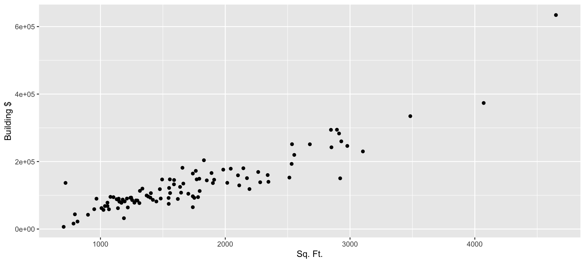
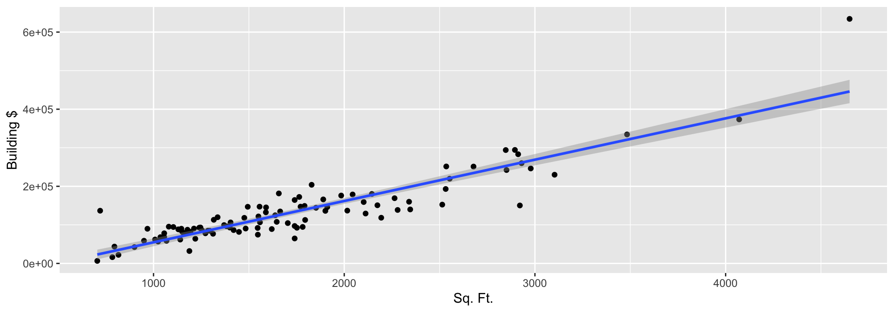
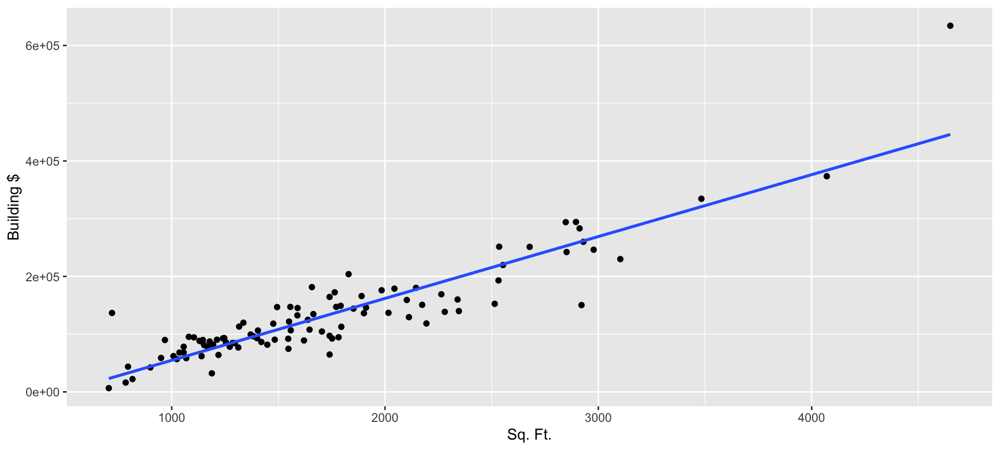
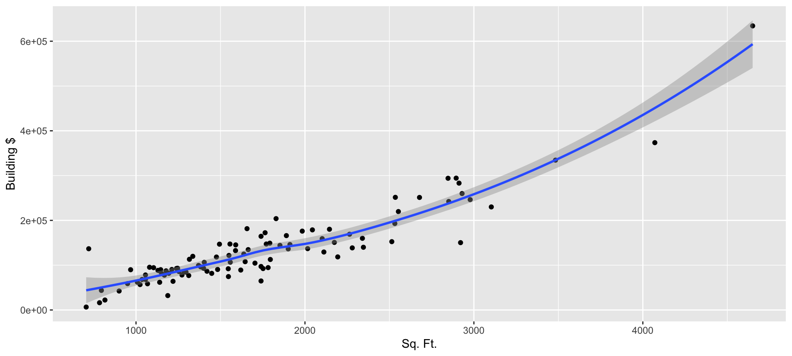
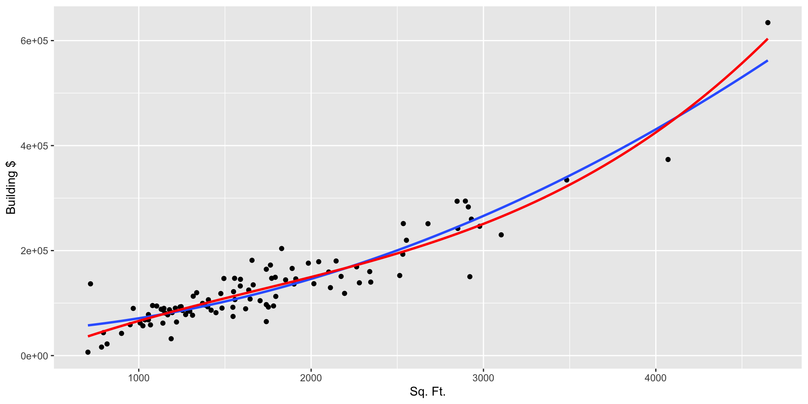
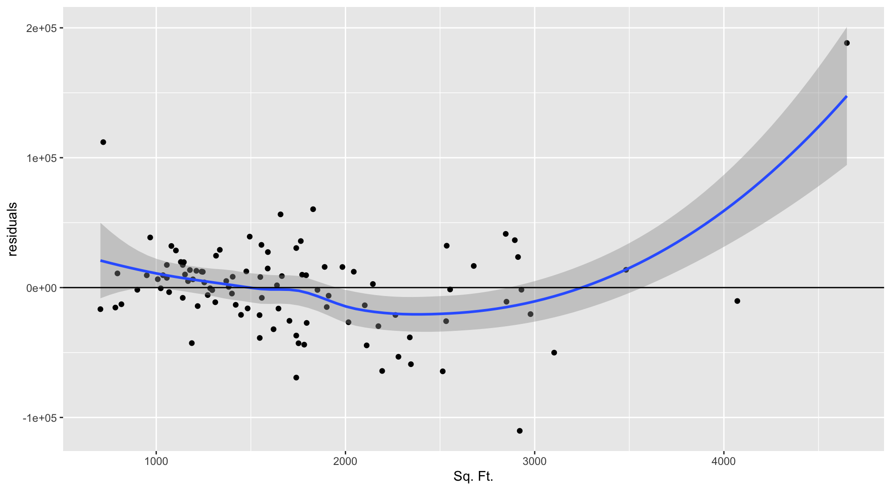
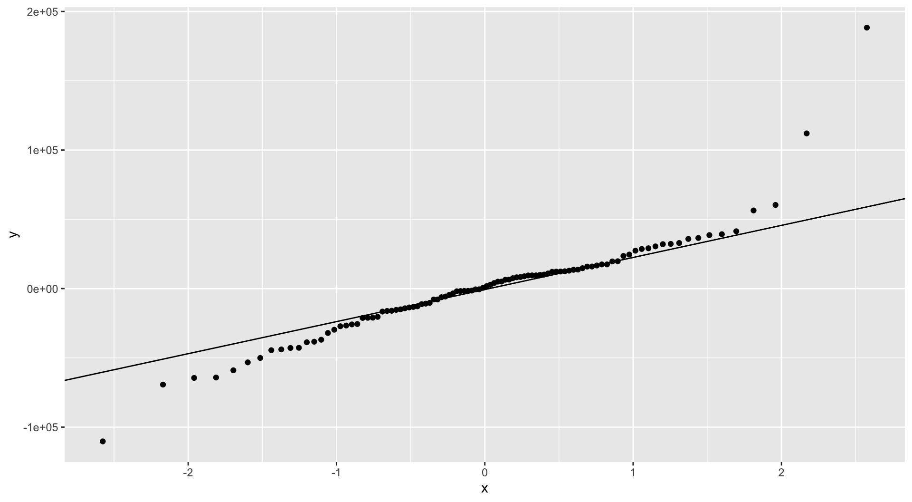

October 8, 2025
Functions:
cor() and cov(): compute covariance/correlation with arguments:
use: how to treat missing data, specify “everything”, “complete.obs”, “pairwise.complete.obs”method: which type of correlation, specify “pearson”, “kendall”, or “spearman”geom_smooth(): adding best-fit lines to a scatterplot with ggplot, with arguments:
method: lm for a linear model or loessformula: specify the form of a linear model (e.g., quadratic, cubic)lm(): fit a linear regression model
scale(): standardize a variable
cor.test(): hypothesis test for the correlation coefficient (“nil” hypothesis)
pwr::pwr.r.test: power analysis for correlations and simple linear regression
poly(): create polynomial formulas
psych::tetrachoric(): compute tetrachoric correlations
psych::biserial(): compute biserial correlations
Today, we’ll consider the woodard.xls dataset:
This data contains information about house features/prices of 100 houses in Raleigh, North Carolina.
Rows: 100
Columns: 10
$ `Year Built` <dbl> 1990, 1986, 1955, 1983, 2003, 1967, 1924, 1980, 1989, 199…
$ `Sq. Ft.` <dbl> 2102, 1740, 795, 1152, 1404, 1752, 1829, 1246, 2264, 3483…
$ Story <dbl> 1.00, 1.50, 1.00, 1.00, 1.00, 1.00, 1.50, 1.00, 2.00, 2.5…
$ Acres <dbl> 0.77, 0.06, 0.30, 0.68, 39.38, 0.29, 0.25, 0.29, 0.25, 0.…
$ `No. Baths` <dbl> NA, 3.0, 1.0, 2.0, 2.0, 1.5, 3.0, 2.0, 2.5, 3.0, 2.0, 1.0…
$ Fireplaces <dbl> 1, 1, 0, 0, 0, 1, 1, 1, 1, 1, 0, 0, 1, 1, 1, 1, 1, 1, 1, …
$ `Total $` <dbl> 203200, 119096, 71666, 131103, 4904102, 144452, 496425, 1…
$ `Land $` <dbl> 44000, 22000, 28000, 50000, 4797750, 52000, 292500, 76000…
$ `Building $` <dbl> 159200, 97096, 43666, 81103, 106352, 92452, 203925, 93187…
$ Zip <dbl> 27603, 27604, 27610, 27616, 27519, 27604, 27607, 27511, 2…First, we’ll look at the relationship between Building $ and Sq. Ft. conditions.

We can add different types of best-fit lines using geom_smooth().
The method argument tells ggplot which type of best-fit line to draw. The lm option indicates a linear model, and the formula = y ~ x option indicates simple linear regression.

By default, ggplot adds an error band around the best-fit line. We can turn this off using the argument se = FALSE.

To add the nonparametric loess line, use method = loess:

For polynomial best-fit lines, we need to change the formula argument. For quadratic regression (a polynomial of degree 2), specify method = lm and formula = y ~ poly(x, 2). Here, the method is lm because polynomial regression is part of the general linear model.

The cov() and cor() functions are the easiest ways to calculate the covariance and the correlation.
cor() function does not work :(Most R functions will not handle missing values automatically (it is a good thing). You usually need to tell the function what to do with missing values. For example with cor() and cov():
No. Baths variable has a missing value, so we need to include the use = argument to tell the cor() function what to do when missing data is encountered:cov() function works in a similar wayTo do a hypothesis test of the Pearson product-moment (PPM) correlation, use the cor.test() function:
This correlation is significantly different from 0, \(r = .29\), \(t(98) = 3.01\), \(p = .003\), 95% CI[.09, .46]. This function also gives us the confidence interval.
Finally, we can use the pwr package to conduct power analyses, in much the same way as we did for other tests. For example, for an estimated correlation of -0.05. What sample size would be needed to find that this is significantly different than zero with 80% power?
If you give a matrix of numeric values where the columns represent your variables, the cor() function will create a correlation matrix. Here I am entering the first 4 columns of the dat object:
For the sake of illustration, let’s dichotomize
No. Baths variable to above vs. at/below 2Building $ above and at/below the median priceThe correlation between No. Baths_binary and Building $_binary can be analyzed as either a phi or tetrachoric correlation. Phi correlations are PPMs:
Tetrachoric correlations are available from the psych package and requires a contingency table as input.
Biserial correlations treat the binary variable as as dichotomized normal variable. Biserial correlations can be computed using the biserial command from the psych package. Notice that the dichomized variable must be the second variable specified.
Finally, let’s run a linear regression with Building $ as the DV and Sq. Ft. as the IV. This will give us the equation for the linear best-fit line that we drew on the scatterplot earlier.
Linear regression in R is done with the lm function. lm takes as input a formula of the form: “DV ~ IV”, and you can specify the dataset as the second argument. Usually, you will use the summary() function to look at your regression results.
Call:
lm(formula = `Building $` ~ `Sq. Ft.`, data = dat)
Residuals:
Min 1Q Median 3Q Max
-110291 -16263 1155 14993 188327
Coefficients:
Estimate Std. Error t value Pr(>|t|)
(Intercept) -52468.433 9500.629 -5.523 2.74e-07 ***
`Sq. Ft.` 107.177 5.076 21.116 < 2e-16 ***
---
Signif. codes: 0 '***' 0.001 '**' 0.01 '*' 0.05 '.' 0.1 ' ' 1
Residual standard error: 36330 on 98 degrees of freedom
Multiple R-squared: 0.8198, Adjusted R-squared: 0.818
F-statistic: 445.9 on 1 and 98 DF, p-value: < 2.2e-16Note that the \(t\)-test for the regression slope and the \(F\)-test for \(R^2\) is the exact same test in two different forms. The \(p\)-value is exactly the same, and \(t^2 = 21.116^2 = 445.9 = F\).
The output tells us that \(\widehat{\mathrm{Build.price}} = -52468.43 + 107.18\times \mathrm{Sq.Ft}\).
What does the intercept of -52468.43 represent? Is the intercept by itself a useful piece of information in this case?
For a one-unit increase in Sq. Ft., Building $ is expected to increase by $107.18 on average.
These interpretations assume that a straight line is an “appropriate” representation of the relationship between our variables.
We can find standardized regression coefficients by using scale() to standardize each of the variables we input into lm().
Call:
lm(formula = scale(`Building $`) ~ scale(`Sq. Ft.`), data = dat)
Residuals:
Min 1Q Median 3Q Max
-1.29515 -0.19098 0.01356 0.17607 2.21153
Coefficients:
Estimate Std. Error t value Pr(>|t|)
(Intercept) -8.215e-18 4.267e-02 0.00 1
scale(`Sq. Ft.`) 9.054e-01 4.288e-02 21.12 <2e-16 ***
---
Signif. codes: 0 '***' 0.001 '**' 0.01 '*' 0.05 '.' 0.1 ' ' 1
Residual standard error: 0.4267 on 98 degrees of freedom
Multiple R-squared: 0.8198, Adjusted R-squared: 0.818
F-statistic: 445.9 on 1 and 98 DF, p-value: < 2.2e-16Is the output what you expect? What pieces are redundant with output we found earlier?
To be careful about our hypothesis test conclusions, we will want to evaluate our assumptions. With regression, most of our assumptions are about the residuals. We can find residuals from the output of lm() using the residuals function. It can be useful to add these directly to the original data set.

